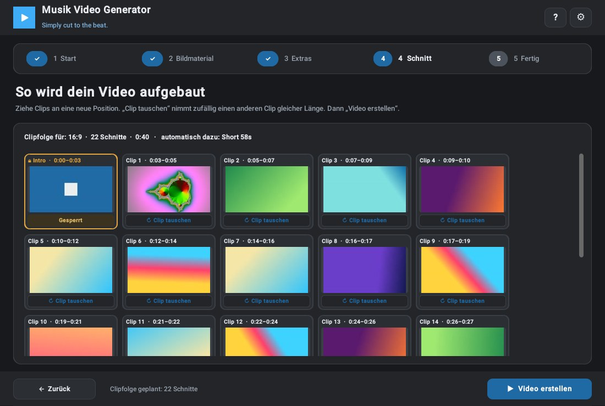
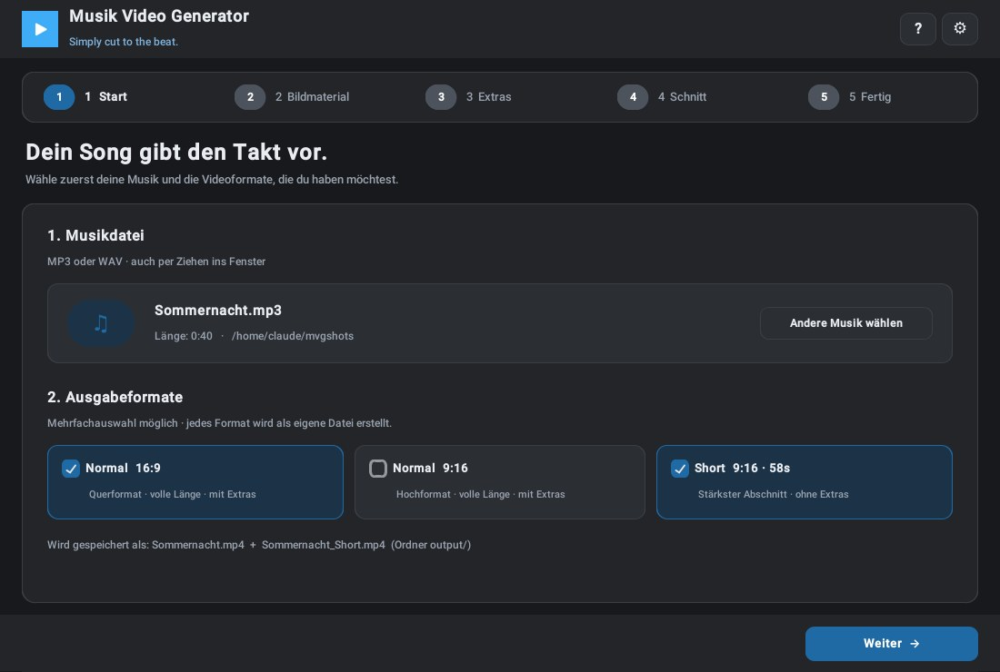
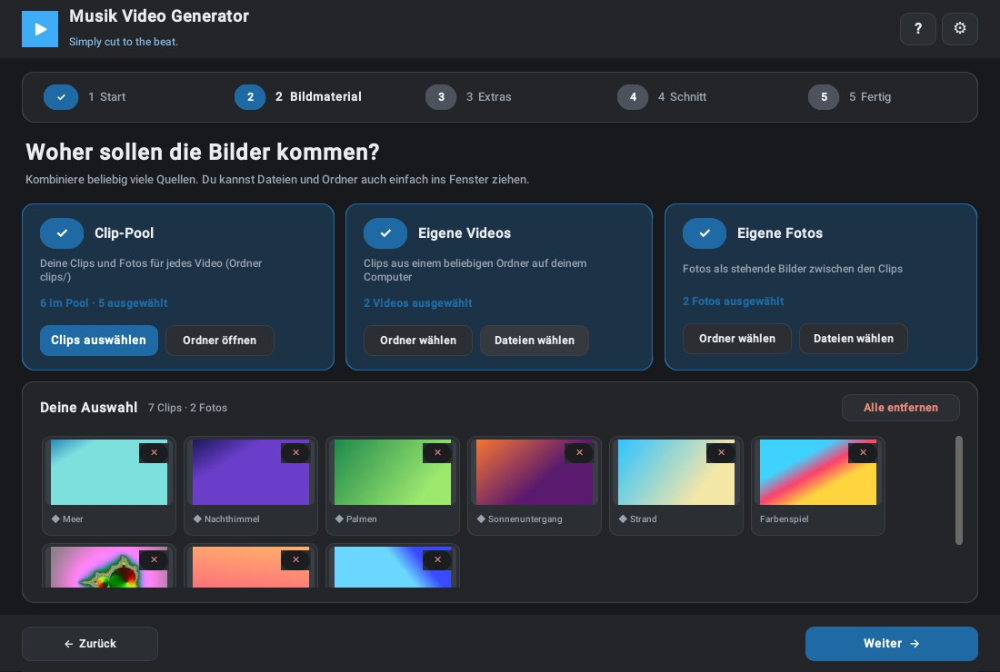
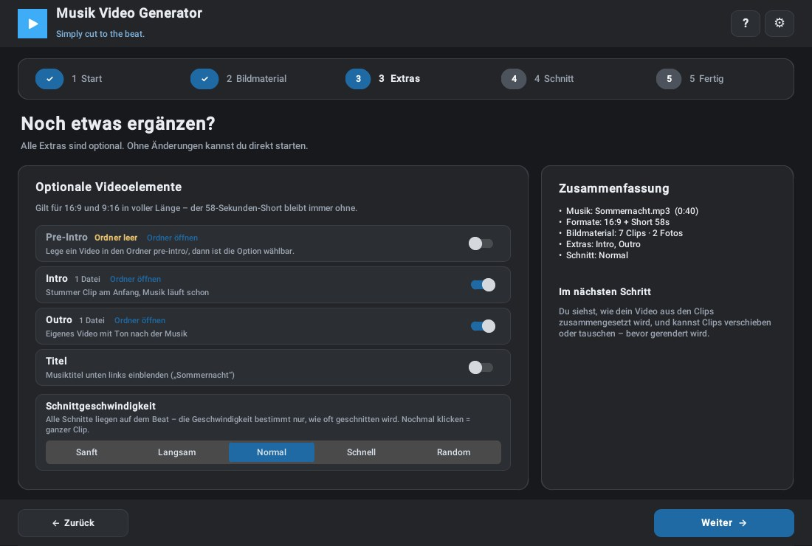
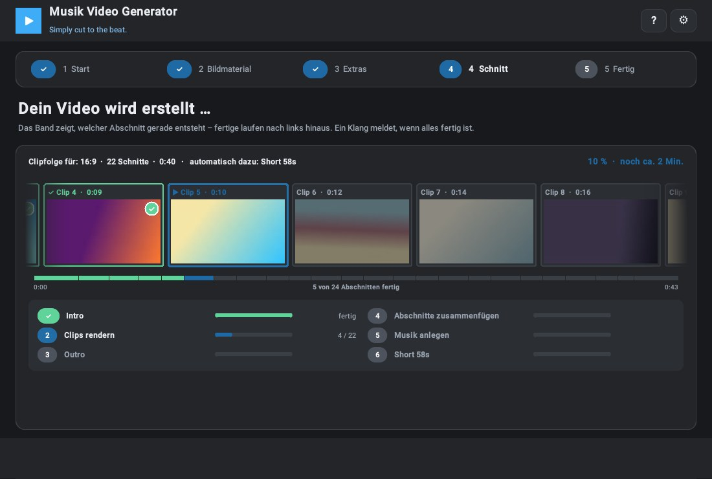
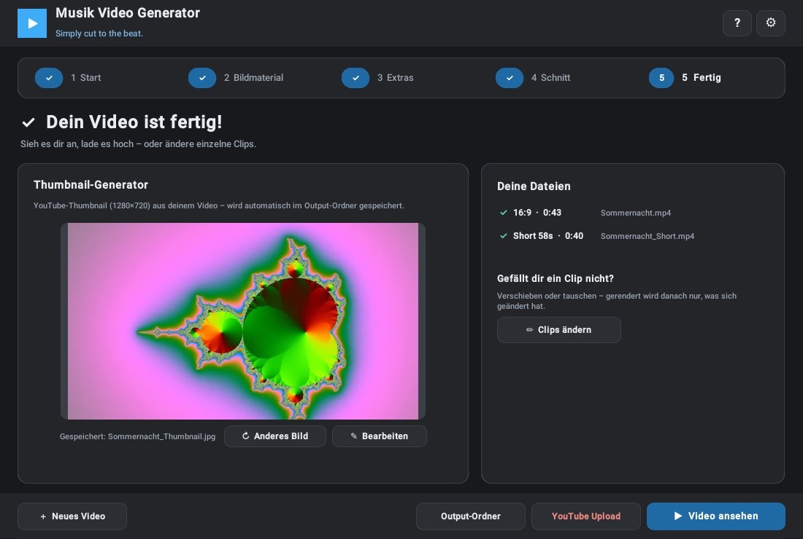

Start
Musikdatei wählen oder ins Fenster ziehen, Formate ankreuzen: 16:9, 9:16 und/oder Short.
Open Source · Version 4.0
In fünf Schritten vom Song zum Musikvideo: Musik wählen, Clips und Fotos auswählen – die Schnitte landen automatisch auf dem Beat. Als 16:9-Video, im 9:16-Hochformat und als 58-Sekunden-Short, auf Wunsch alles in einem Durchgang.
Deutsch · English · Español – Hell- und Dunkelmodus

Kurzbeschreibung
Der Musik Video Generator führt dich Schritt für Schritt zum Video. Du wählst eine Musikdatei und die gewünschten Formate, sammelst Clips und Fotos – aus deinem Clip-Pool, aus beliebigen Ordnern oder einfach per Ziehen ins Fenster – und legst fest, ob Pre-Intro, Intro, Outro und Titel dazukommen. Bevor gerendert wird, siehst du die geplante Clipfolge und kannst Clips verschieben oder austauschen. Während des Renderns läuft ein Band mit den Abschnitten durchs Bild. Am Ende wartet dein Video – samt fertigem YouTube-Thumbnail.
Musikdatei wählen oder ins Fenster ziehen, Formate ankreuzen: 16:9, 9:16 und/oder Short.
Clips und Fotos aus dem Pool, aus Ordnern oder per Drag & Drop – alles in einer gemeinsamen Auswahl.
Optional Pre-Intro, Intro, Outro und Titel – dazu das passende Schnitttempo.
Die Clipfolge prüfen, Clips verschieben oder zufällig tauschen – dann „Video erstellen“.
Video ansehen, Thumbnail ist schon gespeichert, Clips bei Bedarf nachträglich ändern.
Funktionen
Die Musik wird analysiert, jeder Schnitt landet automatisch auf dem Beat – sanft bis schnell oder zufällig gemischt.
16:9, 9:16 und 58-Sekunden-Short in einem Durchgang. Der Short nimmt automatisch den stärksten Abschnitt des Songs.
Ein Ordner für Clips, die du immer wieder nutzt. Unterordner werden zu Reitern im Auswahlfenster – ganz ohne Einstellungen.
Jeder Abschnitt als Kachel: per Ziehen verschieben oder durch einen anderen Clip gleicher Länge ersetzen.
Nach dem Rendern Clips tauschen – gerendert wird nur, was sich geändert hat. Das geht deutlich schneller.
Keine Schnittlänge gewählt? Dann läuft jeder Clip komplett – geschnitten wird am Clip-Ende, genau auf dem Beat.
Nur ein Clip ausgewählt? Er läuft automatisch als nahtloser Loop oder Boomerang durch den ganzen Song – im Takt.
Automatisch ein YouTube-Thumbnail in 1280×720 – und auf Wunsch mit Text, Schriften, Farben, Logo und eigener Vorlage.
Deutsch, English und Español – jederzeit umschaltbar. Dazu Hell- und Dunkelmodus und eine Klick-Hilfe für jeden Bereich.
Einblicke





Windows Download
Lade die neueste Version von GitHub herunter und erstelle deine eigenen Musikvideos. Die Bedienungsanleitung liegt als PDF in Deutsch, English und Español bei.
Musik Video Generator herunterladen
Kostenlos nutzbar für private und kreative Projekte.
Die Nutzung erfolgt auf eigene Verantwortung.
Das Programm wird ohne Clips ausgeliefert – deine eigenen Videos legst du in den Ordner clips/.
Die Anwendung wurde mit Python/PyInstaller erstellt.
Dadurch können vereinzelt Fehlmeldungen durch Antivirenprogramme entstehen.